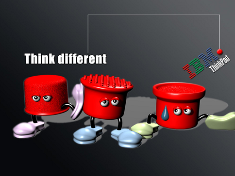

Examples of VimWiki Syntax
Code highlighting
def foobar():
return
typefaces
bold italic strikeout code superscript subscript
Tables
| Year | Temperature (low) | Temperature (high) |
|---|---|---|
| 1910 | -15 | 30 |
| 1920 | -10 | 32 |
| 1930 | N/A | N/A |
Math formulae (rendered by MathJax)
Inline math formula, e.g. \(\sum_i a_i^2 = 1\), is supported.
Centered formula in one line:
\[ \sum_i a_i^2 = 1 \]Multiline formulae (note: no space before %align%):
\begin{align} \sum_i a_i^2 &= 1 + 1\\ &= 2. \end{align}Blockquotes
Text started with 4 or more spaces is a blockquote. It is not highlighted in vim but could be styled by CSS.
Comments
Text line starting with %% is a comment, e.g.
Horizontal line
4 or more dashes at the start of the line is a
Transclusions
Transclude an image from a local URL with absolute path:

with relative path

or from an external URL: